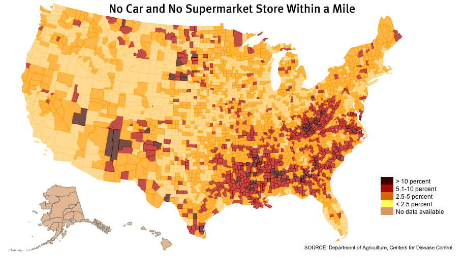

Food Deserts
What are food deserts?
"Food deserts are defined as parts of the country vapid of fresh fruit, vegetables, and other healthful whole foods, usually found in impoverished areas. This is largely due to a lack of grocery stores, farmers' markets, and healthy food providers." -American Nutrition Association
Many communities do not have access to fresh or organic foods. Too many people live closer to a McDonald's than a supermarket. Communities which are economically disadvantaged feel the effects of lack of supermarket and fresh foods far more than more privileged communities.